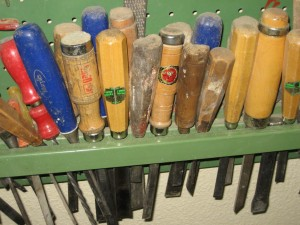
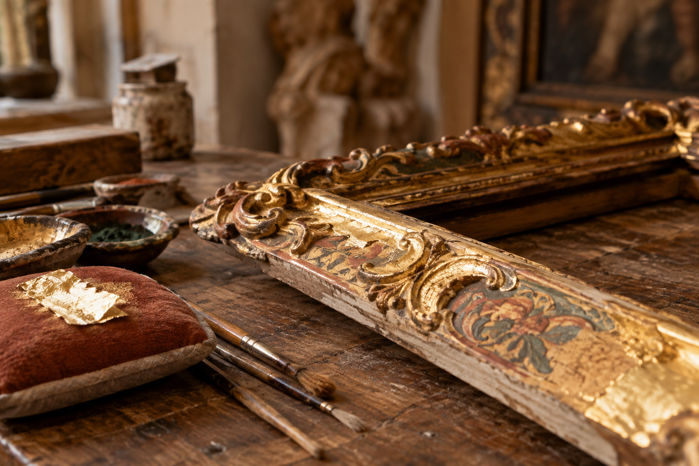
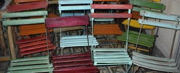

01
Restauración de madera
Muebles, marcos, esculturas, juguetes, artesonados y puertas antiguas.
↗Devolvemos a cada pieza su identidad y su belleza, respetando los materiales, las técnicas y las marcas que la hacen única.
Conoce el Taller ↗La filosofía del Taller del Veliko no es solo devolver la integridad física y estética a un objeto, sino garantizar su conservación óptima y duradera.
Por ello, llevamos más de 15 años dedicados a la restauración de muebles y otros objetos sobre soporte madera —marcos, esculturas, juguetes, artesonados y puertas antiguas— y a transmitir nuestro criterio y forma de hacer.
Nuestra especialidad es la madera y campos afines: policromías, dorados, tapicerías, encorados y mármoles. También contamos con expertos en porcelana y cerámica, papel y encuadernación artística, pintura sobre lienzo y tabla, metales, fotografía, ebanistería y tapizado.
Ofrecemos además asesoramiento, tasación y expertizaje, decoración y transporte.
Nuestra forma de trabajar →Una mirada experta para conservar, recuperar y poner en valor cada objeto.

Muebles, marcos, esculturas, juguetes, artesonados y puertas antiguas.
↗
Recuperación de acabados, pintura decorativa y técnicas tradicionales.
↗
Catalogación, expertizaje, conservación preventiva, decoración y transporte.
↗Partimos de un estudio detallado de la pieza, atendiendo a sus factores materiales, estilísticos e históricos. Cada paso queda documentado en un informe final.
Entendemos la restauración como una actuación que devuelve la identidad sin alterar las características funcionales, estilísticas o decorativas. Debe ser reversible y duradera.
Cuando una pieza de escaso valor se adapta mejor a un nuevo uso, podemos reciclarla: transformar su función o estilo, añadiendo o eliminando elementos según el proyecto.
Trabajamos de forma tradicional, con limpiezas controladas, encolados con colas orgánicas, goma laca aplicada a muñequilla, encerado a la antigua, lacas, encáusticos y dorado al agua. Usamos productos no agresivos como compromiso con el medio ambiente y nuestra salud.
Enseñanza esencialmente práctica en grupos reducidos, trabajando “in situ” sobre tus propias piezas.
Solicitar información →El objetivo es dar a conocer las técnicas tradicionales en restauración y conservación de muebles. A través del trabajo personal y el intercambio de experiencias, el alumno adquiere conceptos, práctica y criterio de intervención.
Los contenidos teóricos cuentan con apuntes y fotocopias. El alumno aprende documentación del mueble, materiales, técnicas constructivas, épocas y estilos, estado de conservación y criterios de intervención conservativa y estética.
También se trabajan los criterios de conservación: control de humedad relativa y temperatura, transporte, uso y limpiezas. El Taller facilita los materiales necesarios salvo casos concretos.
Cuéntanos qué quieres restaurar, conservar o aprender. Estaremos encantados de escucharte.